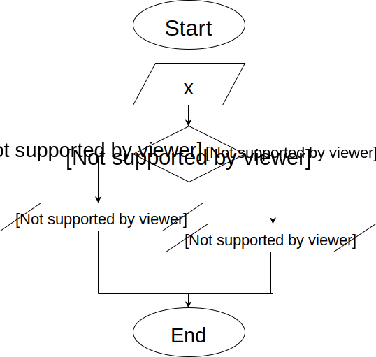

Нарисуйте блок-схему алгоритма вычисления факториала числа N.
Факториал числа N - это произведение всех чисел от 1 до N
N! = 1 * 2 * 3 * 4 * .... * N
Нарисуйте блок-схему алгоритма, который проверяет значение входного параметра x, и если это значение больше или равно 0, то возвращает в качестве результата строку "Число положительное", в противном случае - строку "Число отрицательное"
Нарисуте блок-схему алгоритма суммирования 10 чисел, кратных 5 ( начиная с 0 ).
! warning: просуммировать нужно десять чисел 5, 10, 15, 20, 25, 30, 35, 40, 45, 50
Напилите кодец, который работает с массивом произвольных целых чисел.
var numbers = [ 254, 115, 78, 25, 91, 45, 37 ]
Ваш скрипт должен вывести в консоль все числа больше 50
Посказка: используйте оператор цикла и условный оператор